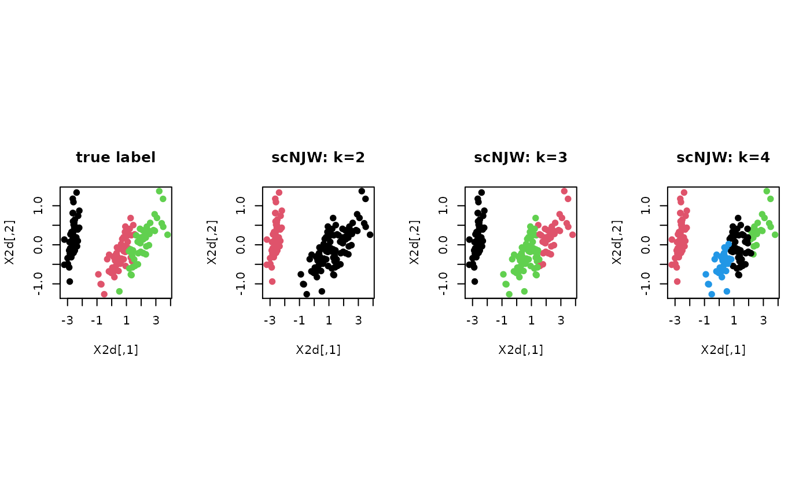

The version of Ng, Jordan, and Weiss first constructs the affinity matrix $$A_{ij} = \exp(-d(x_i, d_j)^2 / \sigma^2)$$ where \(\sigma\) is a common bandwidth parameter and performs k-means (or possibly, GMM) clustering on the row-space of eigenvectors for the symmetric graph laplacian matrix $$L=D^{-1/2}(D-A)D^{-1/2}$$.
scNJW(data, k = 2, sigma = 1, ...)
| data | an \((n\times p)\) matrix of row-stacked observations or S3 |
|---|---|
| k | the number of clusters (default: 2). |
| sigma | bandwidth parameter (default: 1). |
| ... | extra parameters including method to perform clustering on embedded data; either the maximum number of iterations (default: 10). |
a named list of S3 class T4cluster containing
a length-\(n\) vector of class labels (from \(1:k\)).
eigenvalues of the graph laplacian's spectral decomposition.
an \((n\times k)\) low-dimensional embedding.
name of the algorithm.
Ng AY, Jordan MI, Weiss Y (2002). “On spectral clustering: Analysis and an algorithm.” In Dietterich TG, Becker S, Ghahramani Z (eds.), Advances in neural information processing systems 14, 849--856. MIT Press. http://papers.nips.cc/paper/2092-on-spectral-clustering-analysis-and-an-algorithm.pdf.
# ------------------------------------------------------------- # clustering with 'iris' dataset # ------------------------------------------------------------- ## PREPARE data(iris) X = as.matrix(iris[,1:4]) lab = as.integer(as.factor(iris[,5])) ## EMBEDDING WITH PCA X2d = Rdimtools::do.pca(X, ndim=2)$Y ## CLUSTERING WITH DIFFERENT K VALUES cl2 = scNJW(X, k=2)$cluster cl3 = scNJW(X, k=3)$cluster cl4 = scNJW(X, k=4)$cluster ## VISUALIZATION opar <- par(no.readonly=TRUE) par(mfrow=c(1,4), pty="s") plot(X2d, col=lab, pch=19, main="true label") plot(X2d, col=cl2, pch=19, main="scNJW: k=2") plot(X2d, col=cl3, pch=19, main="scNJW: k=3") plot(X2d, col=cl4, pch=19, main="scNJW: k=4")par(opar)